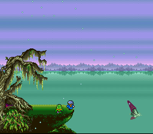
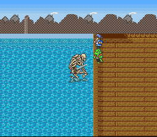
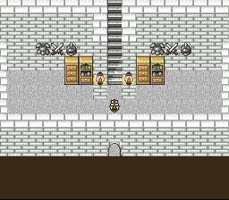
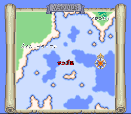
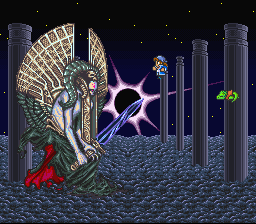
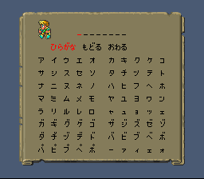
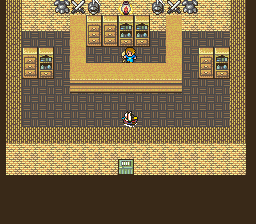

レイディバグは
なぜ起きるのか
港で10回追い返されると、ゲームが「どこまで台本を読んだか」のメモを、プレイ時間の時計と同じ場所に書いてしまいます。時計が進むたびにメモが書き換わり、関係のない場所のデータがイベントとして実行されます。
- 追い返されるたびに、読みかけの台本のメモが1枚ずつ積まれる
- 12枚目のメモは、プレイ時間の時計と同じ場所に置かれる
- 時計が1フレーム進むごとに、読む場所が256バイト手前へずれる
- 押すタイミング次第で、戦闘もマップ移動もエンディングも起きる
イベントは「台本」を1バイトずつ読んで進む
セリフも、マップ移動も、戦闘の開始も、ROMに書かれた「台本」というバイト列で指示されています。（このように、処理の手順を書いたデータを一般に「スクリプト」といいます。このページでは台本と呼びます。）ゲームは台本を先頭から1バイトずつ読み、文字なら表示し、命令なら実行します。
このとき読まれている台本（番号0x2E8）
追い返されるたびに、メモが1枚たまる
台本の途中で別の台本を呼ぶとき、ゲームは「元の台本をどこまで読んだか」をメモに残します。呼んだ台本が終われば、メモを見て元の続きに戻ります。（このように、あとから積んだものを先に取り出す記録方式を「スタック」といいます。）
追い返しでは、台本0x2E8が「船で去る」台本0x173を呼びます。ところが台本0x173が終わる前に次の港に着き、次の港のイベントが始まってしまいます。台本0x173は戻らず、台本0x2E8の最後にある「メモを全部捨てる」命令は実行されません。
メモは1枚8バイトで、メモリの $129C から順に並びます。各段の横の番地が、そのメモの先頭です。メモは1枚目から数えています。ゲーム内部で入れ子の深さを表す変数（$129B）は0から数えるので、12枚目のときの値は11です。12枚目は $12F4 からで、その2・3バイト目（$12F5・$12F6）がプレイ時間カウンタと重なります。置ける枚数に上限の確認はありません。
12枚目のメモは、時計の上に書かれる
メモは1枚8バイトで、中身は「読む場所の下位バイト・上位バイト・バンク（ROMの区画）」の3バイトと、台本の終了位置2バイトです。残り3バイトは使われません。12枚目が置かれる場所は、もともとプレイ時間を数えるカウンタの場所でした。
時計が進むと、読む場所が256バイトずつ手前へ飛ぶ
上位バイトが1減ると、読む場所は256バイト手前に移ります。ボタン待ちで止まっている間も時計は進むので、何フレーム目に押すかで、次に読まれる場所が変わります。
待ち続けたときに読む場所（押すフレームごと）
最初の誤動作は、ボタンを押す前に起きている
バグが始まるのは、10回目の追い返しで台本0x173が4番目の命令を実行した瞬間です。台本0x173は6つの命令でできていて、1〜9回目と10回目では、問題の起きる場所が違います。
台本0x173の中身（$1A:FA42〜、17バイト）
| 順 | バイト列 | 内容 | 1〜9回目 | 10回目 |
|---|---|---|---|---|
| 1 | 0F F1 | フィールド側の処理を呼ぶ（未解読） | 実行 | 実行 |
| 2 | 47 18 D8 FF | 番地$18D8にFFを書く | 実行 | 実行 |
| 3 | 47 18 DA FF | 番地$18DAにFFを書く | 実行 | 実行 |
| 4 | 1B 01 94 | 台本0x194を呼ぶ（メモを1枚積む） | 呼んで、すぐ戻る | 12枚目のメモが時計の上に書かれる。ここでバグ発火 |
| 5 | 1E 14 | 演出0x14（約140フレーム） | 実行 | 実行されない |
| 6 | 1E 11 | 演出0x11 | 途中で次の港のイベントが始まり、戻らない。メモが1枚残る | 実行されない |
12枚目として呼ばれた台本0x194は、最後に「台本0xFFへ切り替える」命令 00 FF で終わります。台本0xFFは中身が「終了」だけの空の台本で、本来はここで11枚目に戻るはずでした。
こうして無関係な台本0x8Fが始まります。別のイベントの台本で、並びは次のとおりです。
暗転してから最初のボタン待ちまで（10回目の追い返し）
| フレーム | 画面 | 裏で起きていること |
|---|---|---|
| 7,180 | 「ゴドンゴにまわろう」 | Aでセリフを送る。台本0x2E8が台本0x173を呼ぶ（11枚目のメモ） |
| 7,181〜7,194 | だんだん暗くなる | 台本0x173の1番目の命令。画面を暗転させている |
| 7,195 | 真っ暗 | 2〜4番目の命令。4番目で台本0x194を呼び、12枚目のメモが時計の上に書かれる。台本0x194は曲番号を選び、最後の 00 FF の1バイト目まで読む |
| 7,196 | 真っ暗 | 切り替えの準備で待つ。時計が進み、読む場所がずれ始める |
| 7,197 | 真っ暗 | 2バイト目をずれた場所から読み、台本0x8Fが始まる。名前と6文字を書いて、ボタン待ちで止まる |
| 7,198〜 | 真っ暗 | ボタン待ち。1フレームごとに、押したときの行き先が256バイトずつ変わる。押下が受け付けられるのは7,200Fから |
| 7,215 | 真っ暗 | TASが最初のAを押す。$1A:A718 から読み始める（7章へ） |
このボタン待ちを何フレーム目に抜けるかが、プレイヤーが結果を左右できる最初の操作です。
フレームを使う命令のたびに、また飛ぶ
ずれるのはボタン待ちだけではありません。フレームを消費する命令は、どれも次に読む場所をずらします。1回押しただけで、台本があちこちへ飛び続けることがあるのはこのためです。
| 命令 | かかる時間 | 次に読む場所 |
|---|---|---|
ボタン待ち 12 | 押すまで | 待ったフレーム数 × 256バイト手前 |
ウィンドウ切り替え 10 11 | 2フレーム | 512バイト手前 |
台本の切り替え 00〜03 | 2フレーム | 番号の2バイト目が512バイト手前の別の値になる |
| 閉じたウィンドウへの最初の1文字 | 6フレーム（Xで5） | 1,536バイト手前（Xで1,280） |
Xボタンは、ボタン待ちを抜ける働きが違うのではありませんでした。ウィンドウを開く途中の特定の1フレームでXが押されていると、開く時間が1フレーム縮みます。12種類のボタンで試して、縮むのはXだけでした。1フレーム縮めば、その後の行き先が256バイト変わります。
TASは、本物のエンディング台本の最後の2バイトを読ませている
7,279F版は8回の押下で台本を3回切り替え、エンディング演出の台本（番号0x277）の最後にある 40 70（エンディング開始）へ、ちょうど読む場所を合わせています。
エンディングを呼ぶ条件
エンディング開始の命令 40 70 がある場所に、読む場所を合わせれば始まります。読む場所は直接指定できないので、「決まった下位バイトのボタン待ちに止まる」ことが本質的な条件です。止まれさえすれば、あとは待つフレーム数で合わせられます。
| 条件 | $1B:B476 を狙う場合 | TASでの満たし方 |
|---|---|---|
| 1. 下位バイト （これが難関） | 下位バイトが75の位置にあるボタン待ちで止まる（押すと次の76から読む） | 台本を3回切り替えて、$1B:C275 のボタン待ちに止まる |
| 2. 押すフレーム | 読む場所が $1B:B4xx になるフレームで押す。バンク$1Bで上位がB4より大きければ、B4まで減るのを待つ。そうでなくても、待ち続ければバンクを行きつ戻りつするので、カウンタが0x1A34になるときに同じ場所を通る | C2からB4まで減るのを14フレーム待ってAを押す |
40 70 というバイト列は台本の領域に8か所あります（$1A:E3F8、$1B:AE33、AF88、B0B3、B1BE、B280、B3C2、B476）。どれに合わせても同じ命令が実行されます。少し手前に入っても、間の命令を読み進んで 40 70 に届く場合がありますが、途中でフレームを使う命令があると読む場所がまたずれるので、場所ごとに確かめる必要があります。止まればよいボタン待ちの候補
台本のある3つのバンクで、必要な下位バイトの位置に 12（ボタン待ち）がある場所を数えました。B476を狙う場合の候補は5か所です（$1A:8775、$1A:CF75、$1B:8175、$1B:8C75、$1B:C275）。TASが使ったのは最後の1つです。
狙う 40 70 の場所 | 必要な下位バイト | 候補（$1A） | 候補（$1B） | 候補（$1C） |
|---|---|---|---|---|
| $1B:AE33 | 32 | 4 | 2 | 1 |
| $1B:AF88 | 87 | 4 | 0 | 3 |
| $1B:B0B3 | B2 | 2 | 0 | 0 |
| $1B:B1BE | BD | 5 | 1 | 0 |
| $1B:B280 | 7F | 2 | 5 | 1 |
| $1B:B3C2 | C1 | 1 | 0 | 0 |
| $1B:B476 | 75 | 2 | 3 | 0 |
| $1A:E3F8 | F7 | 3 | 1 | 0 |
12 でも別の命令の引数や台本でないデータの場合があり、そこに命令の先頭として行き着く道筋があるかも場所ごとに探す必要があります。実際に試したのは $1B:C275 から $1B:B476 へ入る経路だけで、「待ち続ければ同じ場所を通る」という点も仕組みからの計算です。概略版
| 入力 | 読み始めた場所 | 起きたこと |
|---|
詳細版：最初のAからエンディングまで、フレームごと
| フレーム | 入力 | 読む場所 | 裏で起きていること |
|---|---|---|---|
| 7,215 | A | $1A:A718 | ボタン待ちを抜ける。待っていた間に上位がB9からA7まで減っている。「れたな！」の4文字を書き、$1A:A71C の 12 でボタン待ち |
| 7,216〜7,217 | ボタン待ち | ||
| 7,218 | A | $1A:A41D | 「さか」と記号2つ、名前の表示（2D BB）、漢字1文字、「が」と記号2つ。$1A:A428 の 12 でボタン待ち |
| 7,219〜7,220 | ボタン待ち | ||
| 7,221 | A | $1A:A129 | 行送り（24）、記号を1つ書く（2F 28）、「ビ」。$1A:A12D で台本切り替えの1バイト目 00 を読む |
| 7,222 | 切り替えの準備で待つ | ||
| 7,223 | $1A:9F2E | 2バイト目として 8B を読む。台本0x8B（$1A:B819）へ切り替わる。記号、空白、「あのおとぎばなしの」、記号の12文字を書き、$1A:B825 の 12 でボタン待ち | |
| 7,224〜7,226 | ボタン待ち | ||
| 7,227 | A | $1A:B426 | 「ほうびを とらせよう」の10文字を書き、$1A:B430 の 12 でボタン待ち |
| 7,228〜7,234 | ボタン待ち | ||
| 7,235 | A | $1A:AC31 | 「ャ」。$1A:AC32 で台本切り替えの1バイト目 00 を読む |
| 7,236 | 切り替えの準備で待つ | ||
| 7,237 | $1A:AA33 | 2バイト目として A2 を読む。台本0xA2（$1A:C098）へ切り替わる。漢字を1文字書く | |
| 7,238〜7,239 | 文字の表示に3フレームかかる（理由は未確認） | ||
| 7,240 | $1A:BD9A | 「ち」、フラグの条件判定を2つ（28 45 0E、28 42 0E）、名前の表示、「のため」と記号。$1A:BDAB の 11 でウィンドウを切り替える | |
| 7,241 | ウィンドウ切り替えで待つ | ||
| 7,242 | $1A:BBAC | 記号を1つ読む。切り替え先のウィンドウが閉じているので、開き始める | |
| 7,243〜7,246 | X 7,244 | ウィンドウを開いている最中。7,244FのXで、6フレームかかるところが5フレームで済む | |
| 7,247 | $1A:B6AD | 「ある」。1B 01 F8 で台本0x1F8（$1B:8A4D）を呼ぶ（13枚目のメモ）。条件判定、「の」、条件判定のあと、00 FF の1バイト目を読む | |
| 7,248 | 切り替えの準備で待つ | ||
| 7,249 | $1B:8A57 | 2バイト目の FF を正しく読む。13枚目のメモは時計と重なっていないので、ずれない。空の台本0xFFが終わり、12枚目に戻る | |
| 7,250 | 戻る処理で待つ。13枚目にいた4フレームの間も、12枚目の読む場所はずれ続けている | ||
| 7,251 | $1A:B2B2 | 11 でウィンドウを切り替える | |
| 7,252 | ウィンドウ切り替えで待つ | ||
| 7,253 | $1A:B0B3 | 記号を1つ読む。閉じているウィンドウを開き始める | |
| 7,254〜7,257 | X 7,255 | ウィンドウを開いている最中。7,255FのXで、ここも5フレームで済む | |
| 7,258 | $1A:ABB4 | フラグの判定（3A 1E 01）。$1A:ABB7 で台本切り替えの1バイト目 02 を読む | |
| 7,259 | 切り替えの準備で待つ | ||
| 7,260 | $1A:A9B8 | 2バイト目として A2 を読む。台本0x2A2（$1B:C669）へ切り替わり、バンク$1Bに入る。名前の表示、「には 」、名前の表示、「という」。$1B:C673 の 10 でウィンドウを切り替える | |
| 7,261 | ウィンドウ切り替えで待つ | ||
| 7,262 | $1B:C474 | 「ん」を書く（2フレームかかる） | |
| 7,263 | 文字の表示で待つ | ||
| 7,264 | $1B:C275 | 12 でボタン待ち。下位バイトが75の位置で止まるのが、この経路の要点 | |
| 7,265〜7,277 | ボタン待ち。上位がC2からB4まで減るのを待つ | ||
| 7,278 | A | $1B:B476 | 40 70 を読む。エンディング開始 |

押すタイミングを変えると、何が起きるか
最初の待ちから押すフレームを200通りに変えて、実行された命令を記録しました。どれも、ROMにもとからある台本を途中から実行した結果です。

0E 01。2バイト目が敵の種別です。
06 01 など。建物の中に出ました。
08 46 など。


このほか、フラグの変更（200通り中49）や、戦闘回数・現在のマップ番号への書き込みも起きていました。リバイアサンと戦闘になる 0E F0 の経路があるかは、探していません。
ボタンを押し続ければ、半分ほどは操作できる状態に戻る
発火後にAを連打し続けると、台本を次々に読み進めた末に、入れ子が全部片づいて主人公を動かせる状態に戻ることがあります。200通りの押し始めのタイミングで試しました。
操作できる状態に戻った数（200通り中）
最終的な内訳
- 戻るまでの時間は2〜30秒で、15秒前後が最も多くなりました。
- 連打の速さを毎秒30回・10回・5回に変えても、戻る割合はほぼ同じでした。ただし、どのタイミングで戻れるかは入れ替わります。
- 戻ったあとはバグの前と同じ状態ではありません。途中の命令でフラグやマップが変わっています。メニューやセーブ、その先の進行は確かめていません。
できないことと、まだ分かっていないこと
できないこと
- 読む場所を自由に指定すること。選べるのは「何フレーム目に押すか」と「Xを使うか」だけです。
- RAMの内容（名前や所持品）を命令として実行させること。読む場所は常にROMの中に補正されます。
- 追い返し9回以下で起こすこと。12枚目に達して初めて時計と重なります。
未確認
- 次の港のイベントが始まる瞬間と、Xが効く箇所のプログラム上の場所。
- 60種類の命令と約120種類の副命令の大半の意味。
- 本物のスーパーファミコンでの再現。すべてエミュレーター（BizHawk 2.11.1、BSNESv115+）上の結果です。
理解度チェック：まちがえやすい10問
文が正しければ○、まちがっていれば×を選んでください。選ぶと、答えと理由が出ます。